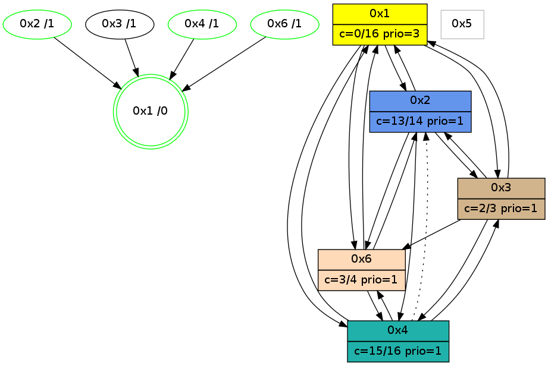

>> << IDX [start] -100 -25 -5 +0 +5 +25 [1185.19673014]
 Previous packets
----------------------------------------------------------------------
1180.174196 beacon01(adaf) #0 coord=01,02,05,03,04,06 cycle=944.0ms assoc
-- color-indic=0 64 b4 f9
1180.184157 beacon02(adaf) #0 coord=01,02,05,03,04,06 cycle=944.0ms assoc 64 e5 06
1180.194156 beacon05(adaf) #0 coord=01,02,05,03,04,06 cycle=944.0ms assoc 64 43 2c
1180.204157 beacon03(adaf) #0 coord=01,02,05,03,04,06 cycle=944.0ms assoc 64 df 08
1180.224157 beacon06(adaf) #0 coord=01,02,05,03,04,06 cycle=944.0ms assoc 64 0d 3e
1180.235932 [Hello(1): seq=865 sym=2,4,6,3 color=0 sysInfo=hasWarning,MaxColorIndicationCalled,MaxColorResponseCalled,MaxColorRequestCalled,ColoringModeRequestCalled stat=2:14,3,4,0/4:1,0,0,0/6:3,2,9,0/3:7,0,4,0]
----------------------------------------------------------------------
1181.178702 beacon01(adaf) #0 coord=01,02,05,03,04,06 cycle=944.0ms assoc
-- color-indic=0 64 70 96
1181.188663 beacon02(adaf) #0 coord=01,02,05,03,04,06 cycle=944.0ms assoc 64 21 69
1181.198663 beacon05(adaf) #0 coord=01,02,05,03,04,06 cycle=944.0ms assoc 64 87 43
1181.208664 beacon03(adaf) #0 coord=01,02,05,03,04,06 cycle=944.0ms assoc 64 1b 67
1181.218664 beacon04(adaf) #0 coord=01,02,05,03,04,06 cycle=944.0ms assoc 64 bd 4d
1181.228664 beacon06(adaf) #0 coord=01,02,05,03,04,06 cycle=944.0ms assoc 64 c9 51
1181.244067 PARSE ERROR************************
Traceback (most recent call last):
File "PacketAnalysis.py", line 167, in showOperaPacket
structPacket = OperaPacketParse.parsePacket(rawPacket)
File "../../pkg-python/HipSens/Core/OperaPacketParse.py", line 461, in parsePacket
return parseHelloMessage(data)
File "../../pkg-python/HipSens/Core/OperaPacketParse.py", line 127, in parseHelloMessage
assert struct.calcsize("H")*len(neighAddrList) == len(linkList)
AssertionError
48 22 04 00 03 c4 00 02 02 06 01 00 03 00 06 00 01 02 02 00 53 04 00 3a 00 00 4c 08 0b b9 02 0d 02 05 00 00 4c 1d
----------------------------------------------------------------------
1182.183210 beacon01(adaf) #0 coord=01,02,05,03,04,06 cycle=944.0ms assoc
-- color-indic=0 64 3d 91
1182.193171 beacon02(adaf) #0 coord=01,02,05,03,04,06 cycle=944.0ms assoc 64 6c 6e
1182.203171 beacon05(adaf) #0 coord=01,02,05,03,04,06 cycle=944.0ms assoc 64 ca 44
1182.213172 beacon03(adaf) #0 coord=01,02,05,03,04,06 cycle=944.0ms assoc 64 56 60
1182.223173 beacon04(adaf) #0 coord=01,02,05,03,04,06 cycle=944.0ms assoc 64 f0 4a
1182.233172 beacon06(adaf) #0 coord=01,02,05,03,04,06 cycle=944.0ms assoc 64 84 56
1182.244033 [Hello(1): seq=866 sym=2,4,6 color=0 sysInfo=hasWarning,MaxColorIndicationCalled,MaxColorResponseCalled,MaxColorRequestCalled,ColoringModeRequestCalled stat=2:15,3,4,0/4:2,0,0,0/6:3,2,9,0]
----------------------------------------------------------------------
1183.187715 beacon01(adaf) #0 coord=01,02,05,03,04,06 cycle=944.0ms assoc
-- color-indic=0 64 f9 fe
1183.197676 beacon02(adaf) #0 coord=01,02,05,03,04,06 cycle=944.0ms assoc 64 a8 01
1183.207677 beacon05(adaf) #0 coord=01,02,05,03,04,06 cycle=944.0ms assoc 64 0e 2b
1183.217677 beacon03(adaf) #0 coord=01,02,05,03,04,06 cycle=944.0ms assoc 64 92 0f
1183.227677 beacon04(adaf) #0 coord=01,02,05,03,04,06 cycle=944.0ms assoc 64 34 25
1183.237679 beacon06(adaf) #0 coord=01,02,05,03,04,06 cycle=944.0ms assoc 64 40 39
1183.253070 [Hello(4): seq=965 sym=1,3,6 asym=2 sysInfo=hasWarning,MaxColorIndicationCalled,ColoringModeIndicationCalled,MaxColorResponseCalled stat=1:10,11,11,0/3:13,0,2,0/6:5,0,2,0/2:0,0,0,0]
----------------------------------------------------------------------
1184.192222 beacon01(adaf) #0 coord=01,02,05,03,04,06 cycle=944.0ms assoc
-- color-indic=0 64 b5 4e
1184.202182 beacon02(adaf) #0 coord=01,02,05,03,04,06 cycle=944.0ms assoc 64 e4 b1
1184.212183 beacon05(adaf) #0 coord=01,02,05,03,04,06 cycle=944.0ms assoc 64 42 9b
1184.222183 beacon03(adaf) #0 coord=01,02,05,03,04,06 cycle=944.0ms assoc 64 de bf
1184.232184 beacon04(adaf) #0 coord=01,02,05,03,04,06 cycle=944.0ms assoc 64 78 95
1184.242185 beacon06(adaf) #0 coord=01,02,05,03,04,06 cycle=944.0ms assoc 64 0c 89
1184.253971 [Hello(1): seq=867 sym=2,4,6,3 color=0 sysInfo=hasWarning,MaxColorIndicationCalled,MaxColorResponseCalled,MaxColorRequestCalled,ColoringModeRequestCalled stat=2:15,3,4,0/4:2,0,0,0/6:3,2,9,0/3:0,0,0,0]